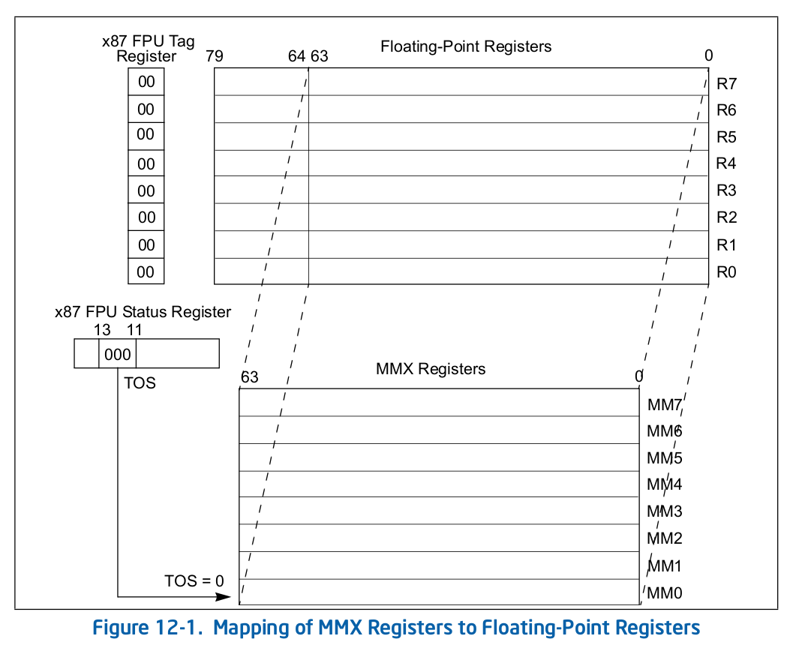
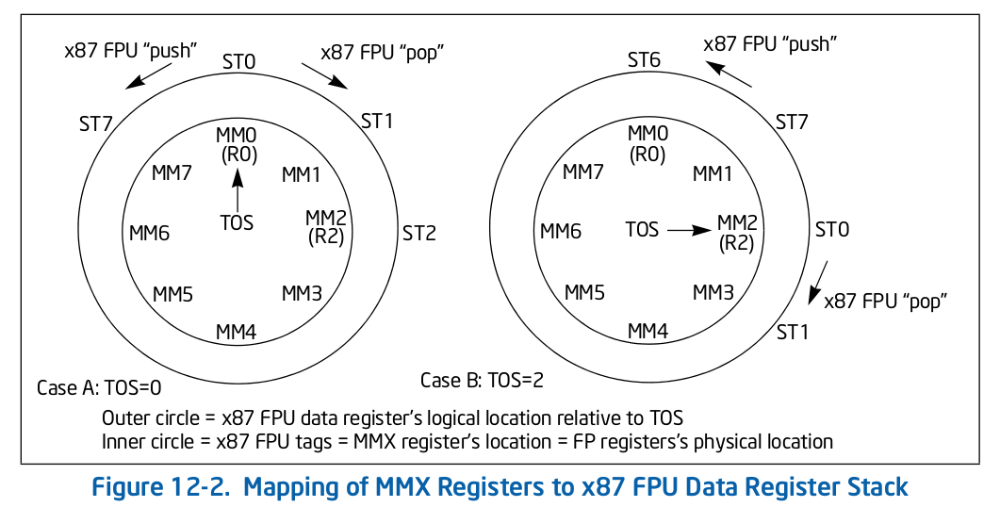

3A_chap12-Intel_MMX_technology_system_programming
 times read
times read
Contents
1. MMX 指令集的模拟
不同于 x87 FPU 指令 , IA-32 和 Intel 64 架构不支持 MMX 指令的模拟 , CR0.EM 标志无法用于 MMX 指令的模拟 . CR0 的标志位和 MMX 指令的执行情况关系如下 :
| EM | MP | TS | action |
|---|---|---|---|
| 0 | 1 | 0 | 执行 |
| 0 | 1 | 1 | #NM 异常 |
| 1 | 1 | 0 | #UD 异常 |
| 1 | 1 | 1 | #UD 异常 |
支持 MMX 指令的处理器 , 必须设置 MP 标志 .
2. MMX 状态和寄存器别名
MMX 状态由 8 个 64-bit 寄存器 ( MM0-MM7 ) 组成 , 是浮点寄存器 R0-R7 的别名 . MMX 寄存器映射到 R0-R7 的物理地址 , 而不是浮点寄存器栈 ( ST0-ST7 ) 中的相对地址 . 因此 MMX 寄存器的映射是固定的 , 不会被浮点状态字中的 Top Of Stack ( TOS ) 域影响 .

通过 MMX 指令写入值到 MMX 寄存器时 , 写入的值也会出现在对应浮点寄存器的 bit 0:63 ; 类似的 , x87 FPU 写入一个数到浮点寄存器时 , 数的低 64 位也会出现在对应的 MMX 寄存器 .
MMX 指令对于包含在浮点寄存器中的 x87 FPU 状态 , x87 FPU tag 字 , x87 FPU 状态字有影响 :
- MMX 指令写入值到 MMX 寄存器时 , 对应浮点寄存器的 bit 64:79 会设置为 1 .
- 执行 MMX 指令 ( 除了 EMMS 指令 ) 时 , x87 FPU tag 字中的每个标签域都设置为 00B ( 有效 ) .
- 执行 EMMS 指令时 , x87 FPU tag 字中的每个标签域都设置为 11B ( 空 ) .
- 每次执行 MMX 指令 , TOS 的值设置为 000B .
MMX 指令的执行不会影响 x87 FPU 状态字中的其他位 ( bit 0:10 , bit 14:15 ) , 也不会影响组成 x87 状态域的其他 x87 FPU 寄存器的内容 .
x87 FPU tag 字的值不会影响 MMX 寄存器的值 , 也不会影响 MMX 指令的执行 ; 但是 MMX 指令确实会修改 x87 FPU tag 字的内容 . 如果在执行 x87 FPU 指令前没有初始化或恢复 x87 FPU 的状态 , 这些修改可能会影响 x87 FPU 的操作 .
FSAVE , FXSAVE 和 FSTENV 指令读取 x87 FPU tag 寄存器和每一个浮点寄存器的内容 , 确定每一个寄存器的真实 tag 值 , 保存被更新的 tag 字到内存 .
执行这些指令后 , x87 FPU tag 字中的所有标签都设置为空 ( 11B ) ; 类似的 , EMMS 指令设置 x87 FPU tag 字中的所有标签为 11B 清除 MMX 状态 .
3. 保存和恢复 MMX 状态和寄存器
MMX 寄存器是 x87 FPU 数据寄存器的别名 , 因此可以通过下列方式保存 MMX 状态到内存 , 或者从内存恢复 :
- 执行
FSAVE,FNSAVE或FXSAVE指令保存 MMX 状态到内存 . - 执行
FRSTOR或FXRSTOR指令从内存恢复 MMX 状态 .
上述方式供 OS 使用 , 应用可以通过下列方式 :
- 执行 8 个
MOVQ指令 , 保存 MMX0-MMX7 的值到内存 , 然后执行 EMMS 指令清除 x87 FPU 中的 MMX 状态 . - 执行 8 个
MOVQ指令 , 从内存读取状态到 MMX0-MMX7 .
4. 任务或上下文切换时保存 MMX 状态
切换任务或上下文时通常需要保存 MMX 状态 , 一般规则是如果任务切换代码包含保存 x87 FPU 状态的工具 , 就可以用这些工具保存 MMX 状态 .
5. 执行 MMX 指令可能产生的异常
MMX 指令不产生 x87 FPU 浮点异常 , 也不会影响 EFLAGS 和 x87 FPU 状态字 , 执行 MMX 指令可能产生的异常如下 :
-
内存访问时的异常 :
- stack-segment fault ( #SS )
- general protection ( #GP )
- 缺页 ( #PF )
- 对齐检查 ( #AC )
-
系统异常
- 无效的操作码 ( #UD ) , 设置 CR0.EM 标志时执行 MMX 指令
- 设备不可用 ( #NM ) , 设置 CR0.TS 标志时执行 MMX 指令
-
浮点错误 ( #MF )
-
上述异常的处理函数执行失败时简介产生的异常
如果有 x87 FPU 浮点异常没有处理 , 处理器接收到一个 MMX 指令 , 处理器就会在执行 MMX 指令前产生一个 x87 FPU 浮点错误 ( #MF ) , 允许 x87 FPU 浮点错误异常处理函数处理未处理的异常 .
执行异常处理函数时 , x87 FPU 状态对于处理函数可见 ; 一旦从处理函数返回 , MMX 指令就会被执行 , 改变 x87 FPU 状态 .
6. 调试 MMX 代码
调试工具的工作方式和执行其他的指令相同 , 需要注意的是 x87 FPU 寄存器的逻辑位置和 TOS , MMX 寄存器的物理位置的关系 :

Author Globs Guo
LastMod 2020-10-12